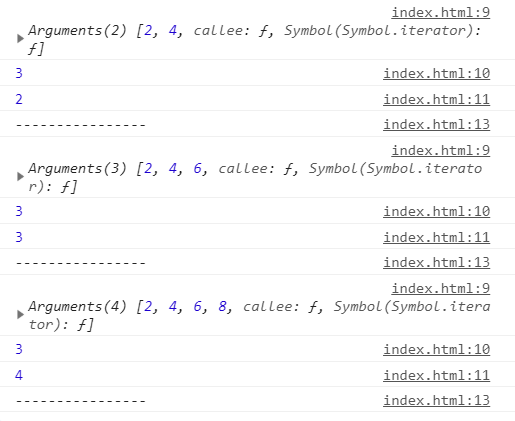
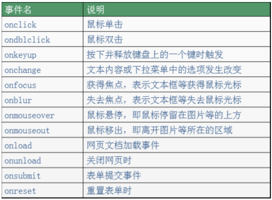

arguments代表的是实参。有个讲究的地方是：arguments只在函数中使用。
返回函数实参的个数：arguments.length
例子：
fn(2,4);
fn(2,4,6);
fn(2,4,6,8);
function fn(a,b,c) {
console.log(arguments);
console.log(fn.length); //获取形参的个数
console.log(arguments.length); //获取实参的个数
console.log("----------------");
}结果：

之所以说arguments是伪数组，是因为：arguments可以修改元素，但不能改变数组的长短。
例子：
fn(2,4);
fn(2,4,6);
fn(2,4,6,8);
function fn(a,b) {
arguments[0] = 99; //将实参的第一个数改为99
arguments.push(8); //此方法不通过，因为无法增加元素
}清空数组的几种方式：
var array = [1,2,3,4,5,6];
array.splice(0); //方式1：删除数组中所有项目
array.length = 0; //方式1：length属性可以赋值，在其它语言中length是只读
array = []; //方式3：推荐JavaScript基础分为三个部分：
ECMAScript：JavaScript的语法标准。包括变量、表达式、运算符、函数、if语句、for语句等。
DOM：文档对象模型，操作网页上的元素的API。比如让盒子移动、变色、轮播图等。
BOM：浏览器对象模型，操作浏览器部分功能的API。比如让浏览器自动滚动。
JS是以事件驱动为核心的一门语言。
事件的三要素：事件源、事件、事件驱动程序。
比如，我用手去按开关，灯亮了。这件事情里，事件源是：手。事件是：按开关。事件驱动程序是：灯的开和关。
再比如，网页上弹出一个广告，我点击右上角的X，广告就关闭了。这件事情里，事件源是：X。事件是：onclick。事件驱动程序是：广告关闭了。
于是我们可以总结出：谁引发的后续事件，谁就是事件源。
总结如下：
事件源：引发后续事件的html标签。
事件：js已经定义好了（见下图）。
事件驱动程序：对样式和html的操作。也就是DOM。
代码书写步骤如下：
（1）获取事件源：document.getElementById(“box”); //类似与ios语言的 UIButton *adBtn = [UIButton buttonWithType:UIButtonTypeCustom];
（2）绑定事件： 事件源box.事件onclick = function(){ 事件驱动程序 };
（3）书写事件驱动程序：关于DOM的操作
代码举例：
<body>
<div id="box1"></div>
<script type="text/javascript">
// 1、获取事件源
var div = document.getElementById("box1");
// 2、绑定事件
div.onclick = function () {
// 3、书写事件驱动程序
alert("我是弹出的内容");
}
</script>
</body>常见事件如下：

下面针对这事件的三要素，进行分别介绍。
获取事件源的常见方式如下：
var div1 = document.getElementById("box1"); //方式一：通过id获取单个标签
var arr1 = document.getElementsByTagName("div1"); //方式二：通过 标签名 获得 标签数组，所以有s
var arr2 = document.getElementsByClassName("hehe"); //方式三：通过 类名 获得 标签数组，所以有s方式1：直接绑定匿名函数
<div id="box1" ></div>
<script type="text/javascript">
var div1 = document.getElementById("box1");
//绑定事件的第一种方式
div1.onclick = function () {
alert("我是弹出的内容");
}
</script>方式2：先单独定义函数，再绑定
<div id="box1" ></div>
<script type="text/javascript">
var div1 = document.getElementById("box1");
//绑定事件的第二种方式
div1.onclick = fn; //注意，这里是fn，不是fn()。fn()指的是返回值。
//单独定义函数
function fn() {
alert("我是弹出的内容");
}
</script>注意上方代码的注释。绑定的时候，是写fn，不是写fn()。fn代表的是整个函数，而fn()代表的是返回值。
方式3：行内绑定
<!--行内绑定-->
<div id="box1" onclick="fn()"></div>
<script type="text/javascript">
function fn() {
alert("我是弹出的内容");
}
</script>注意第一行代码，绑定时，是写的"fn()"，不是写的"fn"。因为绑定的这段代码不是写在js代码里的，而是被识别成了字符串。
我们在上面是拿alert举例，不仅如此，我们还可以操作标签的属性和样式。
举例如下：
<style>
#box {
width: 100px;
height: 100px;
background-color: pink;
cursor: pointer;
}
</style>
</head>
<body>
<div id="box" ></div>
<script type="text/javascript">
var oDiv = document.getElementById("box");
//点击鼠标时，原本粉色的div变大了，背景变红了
oDiv.onclick = function () {
oDiv.style.width = "200px"; //属性值要写引号
oDiv.style.height = "200px";
oDiv.style.backgroundColor = "red"; //属性名是backgroundColor，不是background-Color
}
</script>上方代码的注意事项：
在js里写属性值时，要用引号
在js里写属性名时，是
backgroundColor，不是CSS里面的background-Color。记得所有的像css属性的text-*，line-*、backgroun-*等在js中都写成驼峰
当页面加载（文本和图片）完毕的时候，触发onload事件。
举例：
<script type="text/javascript">
window.onload = function () {
console.log("小马哥"); //等页面加载完毕时，打印字符串
}
</script>有一点我们要知道：js的加载是和html同步加载的。因此，如果使用元素在定义元素之前，容易报错。这个时候，onload事件就能派上用场了，我们可以把使用元素的代码放在onload里，就能保证这段代码是最后执行。
建议是：整个页面上所有元素加载完毕在执行js内容。所以，window.onload可以预防使用标签在定义标签之前。